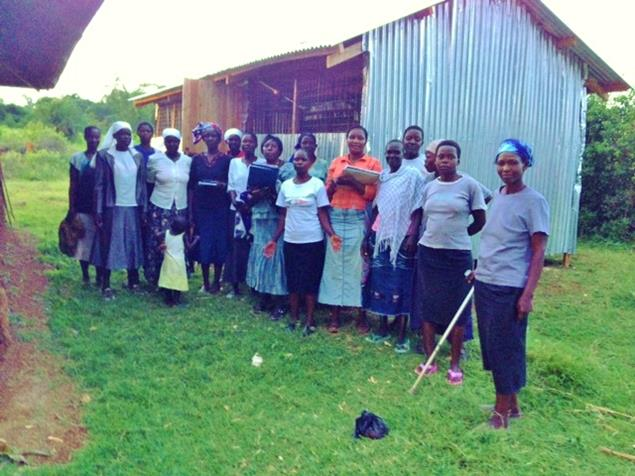

In Kiswahili, wakonyre means "let us help ourselves." In 2007, a group of about twenty women founded a community based organization to do just that through creating small business initiatives as a group. Most women are residents of Katonde village, a village in southwestern Kenya near Lake Victoria. Families in this village are largely dependent on subsistence agriculture, where any environmental shock can have serious effects on the family's ability to meet their basic needs. The women of Wakonyre women's group are a dedicated group of women creating businesses capable of helping them to support the financial needs of their households.
REDI and Enactus of Valdosta State University partnered in 2013 to administer a $3000 loan to a women's cooperative, Wakonyre, in Katonde, Kenya. Along with the loan, REDI and Enactus offered a week long workshop for Wakonyre on recordkeeping and business management in June 2013. REDI and Enactus also facilitated and funded two training workshops on poultry management taught by a local Kenyan poultry farmer. REDI and Enactus continue to support Wakonyre in the initial stages of their poultry business.
